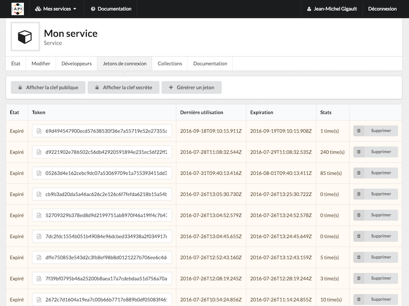

Amélioration des filtres sur l'API
L'implémentation des filtres sur l'API continue avec l'arrivée de nouveaux opérateurs et une gestion d'erreur améliorée. Voici la liste des nouveaux opérateurs :
L'opérateur de comparaison $regex et son acolyte $options permettant de rechercher un pattern dans un champ de type chaîne de caractère
L'opérateur de champ $exists permettant de tester l'existence d'un champ dans une ressource
L'opérateur de logique $not permettant d'inverser la signification d'une structure conditionnelle
Référez-vous à la documentation pour plus de détails.
Une troisème phase de développement viendra compléter l'implémentation des filtres sur l'API.
Amélioration de l'interface utilisateur
Le contraste sur les interfaces graphiques du site et du tableau de bord a été amélioré grâce à l'utilisation d'un fond grisé et à une optimisation de l'espace en haut de page.

Améliorations et résolutions de bogues
L'inclusion des relations est maintenant effective sur les données de collection
La validation des données de collection a été améliorée
L'envoi du courriel de validation de l'E-Mail a été amélioré
Utilisation d'un parser Markdown optimisé